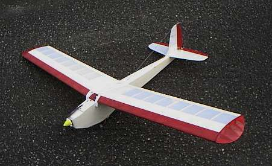
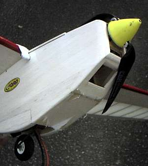
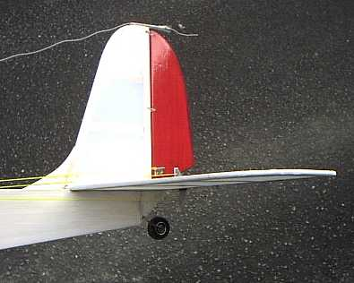
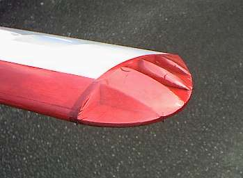

飛行日誌
スカイカンガルー（電動化）

| 全長 | 870mm |
| 全幅 | 1440mm |
| 全備重量 | 720g : 8.4V500AR Nicd 750g : 9.6V1100 NiMH （GP仕様カタログ値：900 ～ 1,000g） |
| 生地重量 | 胴体 122g、水垂尾翼 22g、主翼 141g、計285g |
| フィルム貼後 | 胴体 139g、水垂尾翼 28g、主翼 175g、計342g |
| 動力・機材重量 | 408g : 9.6V1100 NiMH |
| 主翼面積 | 25.6 dm2 |
| 翼面荷重 | 28.1g/dm2 （GP仕様カタログ値：35.1 ～ 39.1g/dm2） |
| 主翼翼型 | クラークＹ類似13%厚翼端ネジリ下げ付き |
| モ－タ－ | QRP HYPER 400/35T-RV |
| ギヤユニット | QRP 400BB ギヤダウン・ユニット |
| ギヤ比 | 2.25:1 （標準仕様） |
| プロペラ | CAM 9×5 折りペラ |
| バッテリ－ | 7N-500AR, 8.4V Ni-Cd (SANYO) 8N-1100, 9.6V NiMH (KYOSHO) |
| サ－ボ | Futaba FP-S143 (19g)×２、エレベーター・ラダー |
| 受信機 | Futaba R114F (10.9g) |
| アンプ | SKYLINE 22 (Max 22A) |
購入のきっかけ
10年以上もいじっていなかったプレイリーのエンジンが、オイルの固着でスロットルの動作不良となっていたので、昔買ってあったスペアの新品ENYA09に換装した。田舎家の縁側で、騒音と排気煙に包まれながら慣らし運転を行いつつ、「今度は電動機を飛ばしたいなぁ....」と思った。
なにぶん私の住んでいるところは田舎なので、近くに模型屋は無い。職業別電話帳で、豊橋近辺の模型屋を探し、軽トラックでブウブウと出かけた。
小学生の頃、行ったことがあるＭ模型店は、店舗が移転しており、大通りに面した立派な店構えになっていた。ところが飛行機モノは最近は置いてないとのこと。ガラスケースの中に、懐かしのCOX049のエンジンがどうやら売れ残っているらしく、非常に心惹かれるものがあったが、我慢して店を出る。
Ｉ模型店では、こぢんまりとした店構えだったが、奥の方に飛行機のキットがいろいろ積まれていた。うろうろと物色していると、懐かしい木目調の化粧箱に貼られた「スカイカンガルー」のラベルが目に入った。
「うわ、あるじゃん！」
プレイリーよりもさらにゆっくり飛ぶと言われている機体であるし、いつかは作りたいと思っていたので（こういう機体が多くて困りますネ）、燃料タンク・タイヤ２ヶを合わせて購入。ルンルン状態で帰途につく。
キットを見て
ほとんどプレイリーと同じような梱包状態のキット。とても懐かしい。２枚組の原寸大設計図と８ページに及ぶ詳細なフライトテクニックのガイドが付属しているのがありがたい。設計図を机の上に広げ、いろいろと想像して楽しむ。
次の週末、河川敷で諸兄の飛行ぶりを見学した後で、トヨカワホビーさんへ寄り、数多ある飛行機用部品の棚を見ていると、QRPから出ている400モーターとギヤダウンユニットが目に付いた。
『これをスカイカンガルーに付けたら飛ばないかな？』
と、想像が広がり、CAM9×5のプロペラセットも合わせて購入してしまった。家に帰ってモーターやギヤダウンユニットの寸法を確かめ、スカイカンガルーの設計図と照合して見ると、スペース的には余裕である。改造としては、機首部分の先端に隔壁を追加して、そこにギヤユニットをビス止めすること、胴体中央下部にバッテリー室を設けることぐらいである。動力ユニットの各部品の寸法を測り、CADでデータを入力して収まりを検討する。スキャナが無いので、原図面をデジカメで撮影し、CADの背景として取り込む。若干画像のゆがみが出るが、まあ問題は無い程度である。さてさて。
製作マニュアル・設計図を見て
組立に関しては、設計図上に盛り込まれた情報がすべてであるが、三面図、材料表、主な工程の写真、図解など必要にして十分なことが書いてある。特に、材料表が整理されているのは、自作派や改造派にとっては非常にありがたい。これがあれば、自分で作り直すときに部品の買い出しがとても楽である。
ただ、QRPのキットほど詳細な組立マニュアルは付いていないので、まったくの初心者の人にはちょっとわかりずらいかな。（こう書くといかにもベテランぽく聞こえますが、私の場合、機体製作には自信があるものの、フライトの方はズブの素人です、ハイ。）
胴体部分の設計図を見ると、昔の標準的なサーボがいかに大きかったかがわかる。最近の小型サーボを載せる場合、やや後ろに寄せて積まないとバランスがとれないか？ それと、主翼の図面では、もう少し左側のスペースを空けて、翼断面図と、各部品の収まりが描かれるとぐっとわかりやすくなると思う。
尾翼の組立
尾翼は、構造的には難しいところはないので、ちょっとスタイルをいじってみたくなった。どうもクラシックなスタイルの飛行機が好きなので、水平・垂直尾翼共に丸みを帯びたデザインとした。
{kind=link}
{kind=link}
胴体の組立
電動化に当たって、胴体の改造は以下の３点である。
- 胴体幅のスリム化と機首部の絞り込み
- 機首先端部への隔壁（ギヤユニット受け）追加と機首上部のカバー
- 胴体中央下部への電池室の追加
以下のファイルに胴体の検討図を示す。
{kind=link}
胴体幅は、オリジナルの70mmから60mmに狭めた。これにより、胴枠F8,9,10,11,12の幅を狭め、胴枠F5は3mm厚の航空ベニヤで自作した。機首部は若干絞り込み、F5の位置で55mm、先端部で44mmとした。エンジン搭載に較べれば、振動はかなり減少するということがいろいろなホームページの改造事例からわかったので、F5と先端部隔壁のみ3mmベニヤとし、他の補強材はすべてバルサを用いた。
機首先端部の隔壁には、プロペラシャフト穴とギヤユニット固定のためのビス穴４カ所を開け、ダウンスラストは4.5度、右サイドスラスト3.0度の傾きを付けて胴体に接着した。プロペラシャフト位置はオリジナルのままである。機首上面は、ギヤユニットが少しはみ出すので、それをカバーできるだけ持ち上げることとなった。そのため、胴体側板F7に三角形のバルサ材を追加して形状を整えた。
機首下面材F6及びF16、そしてメインギヤの取り付け材などはオリジナルのものをそのまま用いた。そして先端部隔壁とF6下面には大きな空気取り入れ口を開け、モーターとバッテリーの冷却に留意した。排出空気は、電池室の隙間から抜けるであろう。

電池室は胴体下面からF18を取り去ってオープンな構造とし、3mmバルサ材で天板、補強材、隔壁などを追加した。所定の重心位置を得るためにはどのあたりにバッテリーが収まるか想像が付かなかったので、前後に十分動けるような作りとして、バッテリーの固定はベルクロ方式とした。結果的に７セルと８セルの500ARニッカド電池が利用できるようになった。
メインギヤは、１車輪にするか２車輪にするか迷ったが、よりモーターグライダーらしい雰囲気のある１車輪方式を選んだ。ただ、この場合、電池室の真上に車輪が位置するので、バッテリーの交換が少々面倒になった。ピアノ線の尾ソリと支持材F21は、F21の形状がすらりとした胴体の印象を鈍らせているような気がしたので、小径のスポンジタイヤに変更した。

主翼の組立
主翼は、翼端部の造作を除き図面どおりに組み上げた。リブの加工によって、翼端へ行くに従いテーパーとねじり下げを付ける巧みな設計に感心する。
翼端は、水平・垂直尾翼を丸いレトロスタイルにしたので、それに合わせてラウンドさせた。膨らんだ流線型の3mmバルサを下面材とし、リブを4カ所、胴体と直角方向に設けた。ところがフィルム張りの段階で、少々凸凹が付いてしまい、結果的に翼端の抵抗を増やしてしまった。（泣）

一番外側のリブから下面材を斜めにせり上げて処理する方法をとるか、翼端のリブをメインリブと平行にした方が良かったと思う。アトノマツリ。
RC装置の搭載とリンケージ
受信機・サーボ2ヶをどこへ置くかはまったく予想がつかなかったので、サーボは設計図の指示の一番機首寄り、受信機はそのさらに前側に配置した。ところがこれではまだテールヘビーで、バッテリーを予定よりも機首寄りに積む羽目になった。受信機・サーボ共に軽量なので、胴体開口部の一番前寄りに積んだほうが、バッテリー位置が後退するので取り外しが楽になるだろう。
リンケージは素直にムサシノ方式の水糸両引きタイプで工作した。少々慣れが必要だが、インターネット上には懇切丁寧に解説してあるページが多々あるので参考にすれば問題ないと思う。
重心位置の調整
バッテリー位置を前後に動かして、設計図の指示どおりに重心位置を調整し、バッテリー位置を決めた。バッテリーはベルクロで固定するので、電池側にもベルクロの小片をボンドG17で接着した。
フライト・インプレッション
いつもの河川敷私設飛行場にて、ベテランのＳさんに初飛行を御願いする。スロットル全開で 9×5 の折りペラがブーンと力強く回転し、手投げでスムースに上昇していく。400クラスとしてはやや重たい機体なので、少々心配したもののりっぱに飛んでいる。さすがに宙返りやロールを軽々とこなす、というわけにはいかないが、入門者用の機体としてはまずまずであろう。自分で改造し、苦労して完成させた機体が大空を舞うのを見るのは、本当に気分がいい。初飛行が成功したので、その日は寝るまで一日中気分が良かった。
エンジン機のプレイリーでだいぶ操縦に慣れたので、早朝の無風時を狙い、とあるグラウンドでスカイカンガルーEPを自力で飛ばしてみた。最初は、スロットルを開け気味にしても機首がちょっと突っ込みがちのような感じがしたので、バッテリー位置を調整し、エレベーターのトリムを、目視でエレベーター後縁が 1mm ほど上がるセッティングにしたところ、まるで別の機体のように低速飛行ができるようになった。感覚的にはエンジン機のプレイリーの７割ぐらいの低スピードである。（翼面荷重から計算すると、実際には１割遅い程度。しかしその１割が実に遅く感じられる）
グラウンドに描いてある 200m トラックに合わせて、走れば追いつけそうな速度で早朝の静寂の中をギヤユニットの音だけ立てて粛々と飛ぶスカイカンガルー。まさに設計者の館林氏の提唱している「ゆっくりズム」の世界を堪能することができた。スロットルのスティックの１刻みに明確に反応し、１刻みふかせば緩上昇、１刻み絞れば緩降下と、スピードが遅いだけに、自由自在に飛ばすことができる。思わず頬がゆるむ。
ちょっと高度が下がりすぎて、慌ててふかすと意図せずタッチ・アンド・ゴーが実現した。思わず口元がにやける。（笑） ここのグラウンドは高台にあり、そのエリアを外れるとどこへ行くか分からないので高くても高度 5m ほどをゆっくり飛ばす。ビデオで見た館林さんのスペシャル軽量仕様GPプレイリー（重量 700g）と同じような飛びっぷりが実現できたので本当に嬉しかった。
まだ正確に計時してないが、ゆっくりズム飛行では、9.6V-500ARのニッカドでも 7分程度、9.6V-1100のニッケル水素バッテリーなら12分ぐらいの飛行時間が得られると思う。これなら電動機でも十分練習時間がとれる。河川敷で着陸進入の練習をみっちりできるであろう。ただ、翼面荷重が小さい分、風にあおられやすいので、無風～微風時に飛ばすのが前提となる。
Wingtips 目次へ
サイトマップ
ホームへ
お問い合わせ